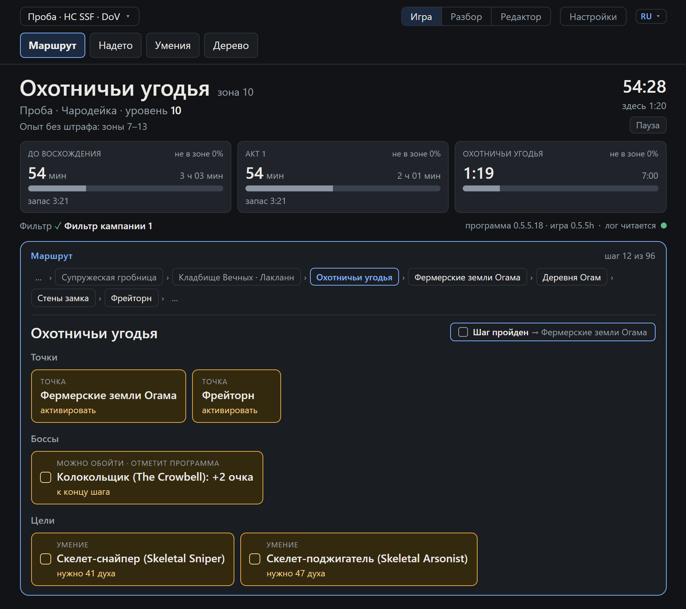
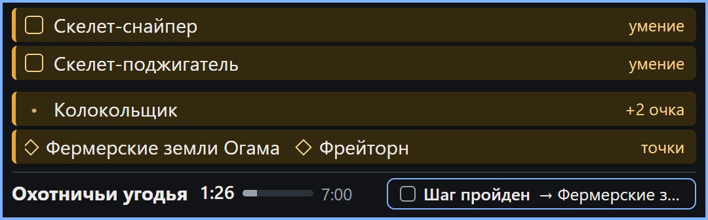

PoE2 Runbook
Программа для Windows к Path of Exile 2: ведёт по вашему плану — маршрут, цели, билд — по логу игры и показывает текущий шаг и что на нём осталось сделать.
Узнаю текущую сборку…
Первая публичная сборка ещё не опубликована.
Она появится здесь: программа скачивается только с этой страницы.





Снимки — с пробной копии программы с вымышленным героем.
Что программа читает, слушает и нажимает
Каждая строка ниже взята из кода программы. Программа — отдельное окно рядом с игрой: в самой игре она ничего не меняет — ни файлов, ни памяти.
Читает: файлы игры
logs\Client.txtлог игры, в папке игры- Только чтение: при запуске — весь лог, дальше новые строки дважды в секунду. Из него берётся: запуск и закрытие игры; зона, в которую вы вошли; уровень героя — из этих строк известны имя и класс героя; награды за задания; гибель героя; какой фильтр предметов загрузила игра; ваши нажатия в дереве пассивных умений; версия игры. Из всего, что сказано в чате, замечаются только реплики NPC, которых ждёт ваш план; остальное не сохраняется.
Documents\настройки игрыMy Games\ Path of Exile 2\ poe2_production_Config.ini - Только чтение; читается заново, когда файл меняется. Из него берётся: какой фильтр предметов выбран, язык клиента и клавиши, привязанные в игре, — чтобы клавиши программы не заняли клавишу, которой пользуется игра.
Documents\фильтры предметов, которые игра скачала из вашего аккаунтаMy Games\ Path of Exile 2\ OnlineFilters\ - Только чтение: название и правила каждого фильтра. Чтобы называть фильтр по имени и предупреждать, когда выбранный фильтр скрывает предмет, который ищет план. Копия каждой версии фильтра, которую загрузила игра, остаётся в папке самой программы.
- Файлы библиотеки Steam и реестр Windows
- Только чтение — чтобы найти, где стоит игра.
libraryfolders.vdf,appmanifest_2694490.acf; в реестре — папка Steam и запись «Path of Exile 2» среди установленных программ. Игра не нашлась — папку указываете сами.
Спрашивает у Windows
- Активное окно
- Какое окно сейчас впереди и какой программе оно принадлежит — чтобы знать, что это игра. Память игры не читается.
- Окно игры, курсор, Alt
- Где стоит окно игры, где курсор мыши и зажат ли Alt — чтобы поставить окна программы поверх игры и дать по ним нажать. С экрана ничего не читается.
Буфер обмена
- За чем следит
- Только за счётчиком изменений буфера — это число, которое ведёт Windows. Содержимое не читается.
- Когда читает содержимое
- Один раз — когда счётчик изменился при активном окне игры: это ваше Ctrl+C или Ctrl+Alt+C над предметом. В любом другом окне буфер не открывается вовсе. То, что лежало в буфере до запуска программы, не читается.
- Что остаётся
- Только текст, не больше 200 000 байт. Текст, который не начинается со строки игры «Класс предмета», сразу отбрасывается: не хранится и никуда не пишется. Текст предмета живёт только в памяти; когда вы нажимаете «Надеть», предмет записывается в файл героя как надетый.
- Копия по F2
- Программа запоминает буфер целиком (до 32 МБ), нажимает в игре клавиши копии, один раз читает предмет и возвращает в буфер то, что в нём лежало. В то, что запомнила, она не заглядывает.
Клавиши, которые слушает
- F2 Сравнить / Надеть
- Сравнивает предмет под курсором с надетым; нажата ещё раз над тем же предметом — записывает его как надетый. Работает и с зажатым Alt.
- F3 Закрыть
- Убирает верхнее окно программы поверх игры.
- F7 Программа ↔ игра
- Выводит окно программы вперёд и возвращает в игру.
- Когда слушает
- Только пока активно окно игры (F7 — и в окне самой программы). Как только активно другое окно, клавиши освобождаются: в других программах они работают как обычно. Если одну из них занимает сама игра, программа берёт следующую свободную из F2, F3, F7, F6, F9, F10, F11. F4 не берётся никогда.
- Остальные клавиши
- Перехватчика клавиатуры нет: что ещё вы нажимаете, программа не видит. Исключение одно — Alt: пока включены окна поверх игры, программа спрашивает у Windows, зажат ли он.
Что посылает игре
- Ctrl+Alt+C
- Один раз на каждое нажатие F2 и только пока активно окно игры. Это клавиши самой игры — «скопировать предмет с подробным описанием». Если подробное описание в игре привязано не к Alt, вместо Alt нажимается та клавиша.
- Больше ничего
- Ни сообщений и команд в чат, ни нажатий мыши, ничего по таймеру, ничего в ответ на лог или экран. «Надеть» и ваши отметки меняют только записи самой программы.
Окна поверх игры
- Над окном игры стоят три небольших окна программы: список шага, ответ на копию предмета и подсказка по дереву пассивных умений. Фокус они не забирают никогда, мышь проходит сквозь них в игру — кроме случая, когда зажат Alt и курсор над окном, и кроме кнопок ответа. Им нужна игра в окне или в оконном полноэкранном режиме. Выключаются одним переключателем в «Настройках».
Что пишет на диск
%APPDATA%\PoE2 Runbook\ - Всё, что программа пишет во время работы:
plans\ваши планы; план, который идёт с программой, копируется сюда при первом запускеruns\по файлу на героя: события из лога, ваши отметки, предметы, которые вы записали надетымиfilters\копии версий фильтра, которые загружала играbackup\прежние версии плана — перед каждой правкой; убранные планыexport\файлы планов, которые вы сохранили, чтобы поделитьсяsettings.jsonпапка игры, размер и место окна, ваш выбор в «Настройках»program.logчто программа делала в этот запуск; пять запусков до него тоже хранятсяwebview\хранилище движка окна: собственные настройки страниц и кеш
%LOCALAPPDATA%\Programs\ PoE2 Runbook\ - Сама программа. Сюда пишет только установщик; права администратора не спрашиваются.
- Папка «Загрузки»
- Файл плана — когда вы нажимаете «Скачать файл плана».
- Папки игры
- В папку игры и в
Documents\не пишется ничего.My Games\ Path of Exile 2 - После удаления
- Удаление программы оставляет
%APPDATA%\на месте — там ваши планы и герои. Не нужны — удалите папку сами.PoE2 Runbook
Сеть
- Программа никуда не отправляет ничего о вас и вашей игре: у неё нет ни аккаунта, ни статистики, ни отчётов об ошибках.
- Своих запросов в интернет у неё нет вовсе — нет даже проверки обновлений.
- Проверка обновлений: программа скачивает с этого сайта один файл —
update/latest.json— и узнаёт, вышла ли версия новее. О вас она ничего не отправляет. - Страницы её окна отдаются с вашего же компьютера (адрес 127.0.0.1) и отвечают только ему.
- Окно рисует Microsoft Edge WebView2 — компонент Windows. Он принадлежит Microsoft и может сам обращаться к её серверам, как это делает браузер Edge.
- Браузер программа открывает только по вашему нажатию: этот сайт — из окна «О программе»; страница фильтра предметов на pathofexile2.com; страница загрузки WebView2 у Microsoft, если этого компонента нет.
Чего программа не делает
- Не читает память игры.
- Не читает экран.
- Не меняет файлы и настройки игры.
- Не пишет в чат и не посылает команд.
- Сама ничего не нажимает: каждое её нажатие — ответ на одно ваше.
- Не просит прав администратора.
Правила Grinding Gear Games, которым она следует
- Правило GGGПрограмма, которая работает отдельно от игры, разрешена; та, что меняет игру или её файлы, — нет.
- PoE2 RunbookPoE2 Runbook — отдельная программа: читает лог и свои файлы, в игре ничего не меняет.
- Правило GGGКлавишу, которая действует в игре, нажимаете вы; она делает одно определённое дело и одно действие в игре.
- PoE2 RunbookF2 делает одну копию на одно нажатие. По таймеру, по логу и по экрану не запускается ничего.
- Правило GGGЛог, буфер обмена и экран можно читать, когда вы знаете, что с ними делается; буфер и экран — один раз на одно ваше нажатие клавиши.
- PoE2 RunbookЭта страница и есть такой перечень. Буфер читается один раз на копию; экран не читается.
Правила пересказаны своими словами. Источник — документация Path of Exile для разработчиков (на английском). GGG не одобряет программы по одной; правила — её, и она может их менять.
This product isn't affiliated with or endorsed by Grinding Gear Games in any way.
По-русски: программа не связана с Grinding Gear Games и не одобрена ею.
Первый запуск
Установщик пока не подписан, поэтому Windows не знает его издателя. Для этого здесь и стоит SHA-256: он показывает, что ваш файл — тот самый, что опубликован на этой странице.
- Сверьте файл до запуска.
В папке со скачанным файлом нажмите на адресную строку Проводника, наберите
powershellи нажмите Enter. В открывшемся окне выполните:
Сравните значение под словом Hash с SHA-256 у кнопки «Скачать» — все 64 знака; большие буквы или маленькие — не важно. Не совпало — не запускайте файл: скачайте его заново с этой страницы.Get-FileHash "PoE2Runbook-Setup-*.exe" - Windows предупредит о неизвестном издателе. Появится окно «Система Windows защитила ваш компьютер». Нажмите «Подробнее», затем «Выполнить в любом случае». Браузер может предупредить раньше — что файл скачивают редко: сохраните его всё равно. В Windows 11 с включённым «Интеллектуальным управлением приложениями» установщик может быть заблокирован совсем: у этой защиты кнопки «Выполнить в любом случае» нет.
- Прав администратора установщик не просит.
Он ставит программу для текущего пользователя в
%LOCALAPPDATA%\. Новая версия ставится поверх прежней; ваши планы и герои остаются.Programs\ PoE2 Runbook - Игру программа находит сама. Steam или клиент с сайта игры, на любом диске. Игра не нашлась — программа так и скажет и даст указать её папку.
Что нужно
- Windows 10 или Windows 11, 64-разрядная.
- Microsoft Edge WebView2 — в Windows 11 он есть, в Windows 10 его ставит Центр обновления Windows. Если его нет, программа так и скажет и предложит страницу загрузки Microsoft.
- Path of Exile 2. Каждая сборка программы сделана под одну версию игры — она названа у кнопки «Скачать».
- Для окон поверх игры: игра в окне или в оконном полноэкранном режиме.
Языки программы
- English
- Русский
- Deutsch
- Español
- Français
- 日本語
- 한국어
- Português (Brasil)
- ไทย
Лог игры программа читает на любом из этих языков клиента.
Автор и лицензия
© 2026 Sergei Labutin
Исходный код открыт: лицензия GNU General Public License версии 3 с дополнительными условиями автора.
Программой можно пользоваться для чего угодно, изучать её, менять и распространять свою версию. Кто распространяет свою версию, обязан:
- открыть её исходный код под той же лицензией;
- оставить в окне «О программе» и в описании строку «Based on PoE2 Runbook by Sergei Labutin — https://poe2.labutin.gg»;
- указать, что версия изменена, и когда;
- дать ей другое название и другой значок.
Это пересказ условий, он их не заменяет. Условия целиком — файлы LICENSE и NOTICE.md: они есть в самой программе («Настройки» → «О программе») и в исходном коде. Юридическую силу имеет английский текст.
Исходный код: репозиторий программы.
Данные и изображения Path of Exile 2, которые идут с программой, принадлежат Grinding Gear Games. Лицензия на них не распространяется.
Официальные адреса
poe2.labutin.gg
Это единственный официальный адрес программы. poe2runbook.com ведёт сюда.
Официальные сборки публикуются только на poe2.labutin.gg; сами файлы лежат в выпусках репозитория программы.
Сборка с любого другого адреса — не наша: перед запуском сверьте SHA-256 файла с тем, что стоит у кнопки «Скачать».